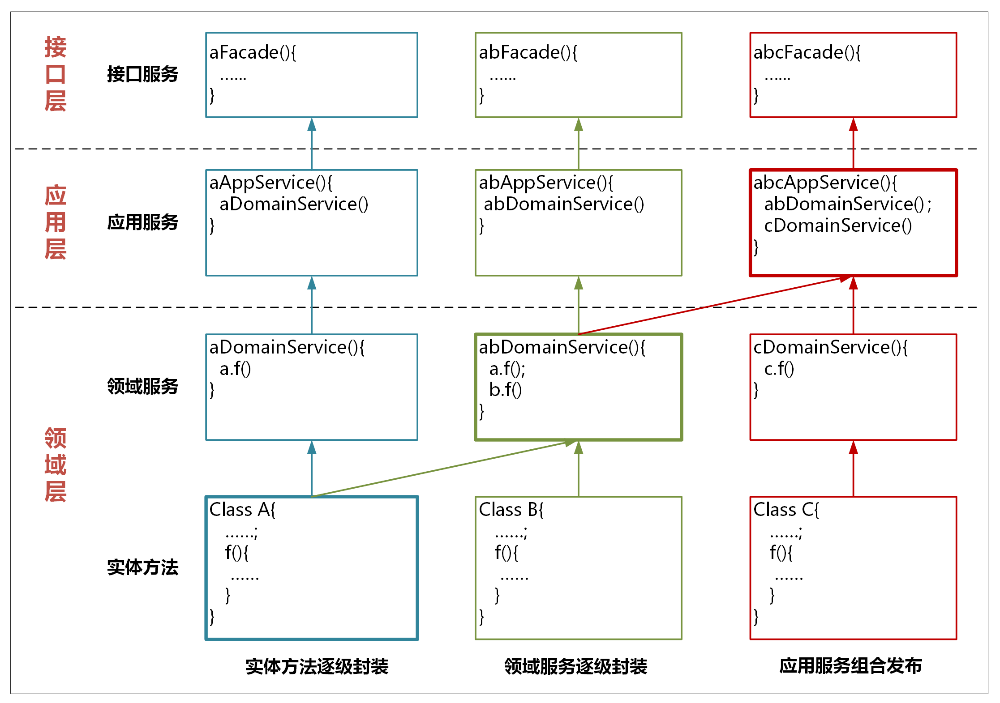
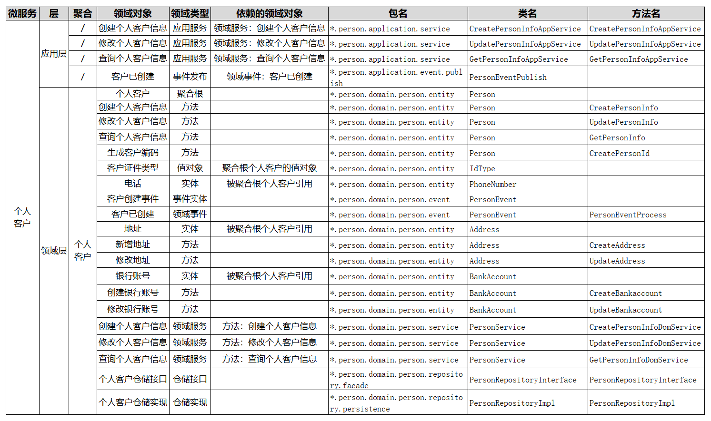

- 00 开篇词 学好了DDD，你能做什么？.md.html
- 01 领域驱动设计：微服务设计为什么要选择DDD.md.html
- 02 领域、子域、核心域、通用域和支撑域：傻傻分不清？.md.html
- 03 限界上下文：定义领域边界的利器.md.html
- 04 实体和值对象：从领域模型的基础单元看系统设计.md.html
- 05 聚合和聚合根：怎样设计聚合？.md.html
- 06 领域事件：解耦微服务的关键.md.html
- 07 DDD分层架构：有效降低层与层之间的依赖.md.html
- 08 微服务架构模型：几种常见模型的对比和分析.md.html
- 09 中台：数字转型后到底应该共享什么？.md.html
- 10 DDD、中台和微服务：它们是如何协作的？.md.html
- 11 DDD实践：如何用DDD重构中台业务模型？.md.html
- 12 领域建模：如何用事件风暴构建领域模型？.md.html
- 13 代码模型（上）：如何使用DDD设计微服务代码模型？.md.html
- 14 代码模型（下）：如何保证领域模型与代码模型的一致性？.md.html
- 15 边界：微服务的各种边界在架构演进中的作用？.md.html
- 16 视图：如何实现服务和数据在微服务各层的协作？.md.html
- 17 从后端到前端：微服务后，前端如何设计？.md.html
- 18 知识点串讲：基于DDD的微服务设计实例.md.html
- 19 总结（一）：微服务设计和拆分要坚持哪些原则？.md.html
- 20 总结（二）：分布式架构关键设计10问.md.html
- 答疑：有关3个典型问题的讲解.md.html
- 结束语 所谓高手，就是跨过坑和大海.md.html
- 捐赠
14 代码模型（下）：如何保证领域模型与代码模型的一致性？
你好，我是欧创新。
在 [第 12 讲] 中，我们了解了如何用事件风暴来构建领域模型，在构建领域模型的过程中，我们会提取出很多的领域对象，比如聚合、实体、命令和领域事件等。到了 [第 13 讲]，我们又根据 DDD 分层架构模型，建立了标准的微服务代码模型，为代码对象定义好了分层和目录结构。
那要想完成微服务的设计和落地，这之后其实还有一步，也就是我们今天的重点——将领域对象映射到微服务代码模型中。那为什么这一步如此重要呢？
DDD 强调先构建领域模型然后设计微服务，以保证领域模型和微服务的一体性，因此我们不能脱离领域模型来谈微服务的设计和落地。但在构建领域模型时，我们往往是站在业务视角的，并且有些领域对象还带着业务语言。我们还需要将领域模型作为微服务设计的输入，对领域对象进行设计和转换，让领域对象与代码对象建立映射关系。
接下来我们围绕今天的重点，详细来讲一讲。
领域对象的整理
完成微服务拆分后，领域模型的边界和领域对象就基本确定了。
我们第一个重要的工作就是，整理事件风暴过程中产生的各个领域对象，比如：聚合、实体、命令和领域事件等内容，将这些领域对象和业务行为记录到下面的表格中。
你可以看到，这张表格里包含了：领域模型、聚合、领域对象和领域类型四个维度。一个领域模型会包含多个聚合，一个聚合包含多个领域对象，每个领域对象都有自己的领域类型。领域类型主要标识领域对象的属性，比如：聚合根、实体、命令和领域事件等类型。

从领域模型到微服务的设计
从领域模型到微服务落地，我们还需要做进一步的设计和分析。事件风暴中提取的领域对象，还需要经过用户故事或领域故事分析，以及微服务设计，才能用于微服务系统开发。
这个过程会比事件风暴来的更深入和细致。主要关注内容如下：
分析微服务内有哪些服务？
服务所在的分层？
应用服务由哪些服务组合和编排完成？
领域服务包括哪些实体的业务逻辑？
采用充血模型的实体有哪些属性和方法？
有哪些值对象？
哪个实体是聚合根等？
最后梳理出所有的领域对象和它们之间的依赖关系，我们会给每个领域对象设计对应的代码对象，定义它们所在的软件包和代码目录。
这个设计过程建议参与的角色有：DDD 专家、架构师、设计人员和开发经理。
领域层的领域对象
事件风暴结束时，领域模型聚合内一般会有：聚合、实体、命令和领域事件等领域对象。在完成故事分析和微服务设计后，微服务的聚合内一般会有：聚合、聚合根、实体、值对象、领域事件、领域服务和仓储等领域对象。
下面我们就来看一下这些领域对象是怎么得来的？
1. 设计实体
大多数情况下，领域模型的业务实体与微服务的数据库实体是一一对应的。但某些领域模型的实体在微服务设计时，可能会被设计为多个数据实体，或者实体的某些属性被设计为值对象。
我们分析个人客户时，还需要有地址、电话和银行账号等实体，它们被聚合根引用，不容易在领域建模时发现，我们需要在微服务设计过程中识别和设计出来。
在分层架构里，实体采用充血模型，在实体类内实现实体的全部业务逻辑。这些不同的实体都有自己的方法和业务行为，比如地址实体有新增和修改地址的方法，银行账号实体有新增和修改银行账号的方法。
实体类放在领域层的 Entity 目录结构下。
2. 找出聚合根
聚合根来源于领域模型，在个人客户聚合里，个人客户这个实体是聚合根，它负责管理地址、电话以及银行账号的生命周期。个人客户聚合根通过工厂和仓储模式，实现聚合内地址、银行账号等实体和值对象数据的初始化和持久化。
聚合根是一种特殊的实体，它有自己的属性和方法。聚合根可以实现聚合之间的对象引用，还可以引用聚合内的所有实体。聚合根类放在代码模型的 Entity 目录结构下。聚合根有自己的实现方法，比如生成客户编码，新增和修改客户信息等方法。
3. 设计值对象
根据需要将某些实体的某些属性或属性集设计为值对象。值对象类放在代码模型的 Entity 目录结构下。在个人客户聚合中，客户拥有客户证件类型，它是以枚举值的形式存在，所以将它设计为值对象。
有些领域对象可以设计为值对象，也可以设计为实体，我们需要根据具体情况来分析。如果这个领域对象在其它聚合内维护生命周期，且在它依附的实体对象中只允许整体替换，我们就可以将它设计为值对象。如果这个对象是多条且需要基于它做查询统计，我建议将它设计为实体。
4. 设计领域事件
如果领域模型中领域事件会触发下一步的业务操作，我们就需要设计领域事件。首先确定领域事件发生在微服务内还是微服务之间。然后设计事件实体对象，事件的发布和订阅机制，以及事件的处理机制。判断是否需要引入事件总线或消息中间件。
在个人客户聚合中有客户已创建的领域事件，因此它有客户创建事件这个实体。
领域事件实体和处理类放在领域层的 Event 目录结构下。领域事件的发布和订阅类我建议放在应用层的 Event 目录结构下。
5. 设计领域服务
如果一个业务动作或行为跨多个实体，我们就需要设计领域服务。领域服务通过对多个实体和实体方法进行组合，完成核心业务逻辑。你可以认为领域服务是位于实体方法之上和应用服务之下的一层业务逻辑。
按照严格分层架构层的依赖关系，如果实体的方法需要暴露给应用层，它需要封装成领域服务后才可以被应用服务调用。所以如果有的实体方法需要被前端应用调用，我们会将它封装成领域服务，然后再封装为应用服务。
个人客户聚合根这个实体创建个人客户信息的方法，被封装为创建个人客户信息领域服务。然后再被封装为创建个人客户信息应用服务，向前端应用暴露。
领域服务类放在领域层的 Service 目录结构下。
6. 设计仓储
每一个聚合都有一个仓储，仓储主要用来完成数据查询和持久化操作。仓储包括仓储的接口和仓储实现，通过依赖倒置实现应用业务逻辑与数据库资源逻辑的解耦。
仓储代码放在领域层的 Repository 目录结构下。
应用层的领域对象
应用层的主要领域对象是应用服务和事件的发布以及订阅。
在事件风暴或领域故事分析时，我们往往会根据用户或系统发起的命令，来设计服务或实体方法。为了响应这个命令，我们需要分析和记录：
在应用层和领域层分别会发生哪些业务行为；
各层分别需要设计哪些服务或者方法；
这些方法和服务的分层以及领域类型（比如实体方法、领域服务和应用服务等），它们之间的调用和组合的依赖关系。
在严格分层架构模式下，不允许服务的跨层调用，每个服务只能调用它的下一层服务。服务从下到上依次为：实体方法、领域服务和应用服务。
如果需要实现服务的跨层调用，我们应该怎么办？我建议你采用服务逐层封装的方式。

我们看一下上面这张图，服务的封装和调用主要有以下几种方式。
1. 实体方法的封装
实体方法是最底层的原子业务逻辑。如果单一实体的方法需要被跨层调用，你可以将它封装成领域服务，这样封装的领域服务就可以被应用服务调用和编排了。如果它还需要被用户接口层调用，你还需要将这个领域服务封装成应用服务。经过逐层服务封装，实体方法就可以暴露给上面不同的层，实现跨层调用。
封装时服务前面的名字可以保持一致，你可以用 *DomainService 或 *AppService 后缀来区分领域服务或应用服务。
2. 领域服务的组合和封装
领域服务会对多个实体和实体方法进行组合和编排，供应用服务调用。如果它需要暴露给用户接口层，领域服务就需要封装成应用服务。
3. 应用服务的组合和编排
应用服务会对多个领域服务进行组合和编排，暴露给用户接口层，供前端应用调用。
在应用服务组合和编排时，你需要关注一个现象：多个应用服务可能会对多个同样的领域服务重复进行同样业务逻辑的组合和编排。当出现这种情况时，你就需要分析是不是领域服务可以整合了。你可以将这几个不断重复组合的领域服务，合并到一个领域服务中实现。这样既省去了应用服务的反复编排，也实现了服务的演进。这样领域模型将会越来越精炼，更能适应业务的要求。
应用服务类放在应用层 Service 目录结构下。领域事件的发布和订阅类放在应用层 Event 目录结构下。
领域对象与微服务代码对象的映射
在完成上面的分析和设计后，我们就可以建立像下图一样的，领域对象与微服务代码对象的映射关系了。
典型的领域模型
个人客户领域模型中的个人客户聚合，就是典型的领域模型，从聚合内可以提取出多个实体和值对象以及它的聚合根。
我们看一下下面这个图，我们对个人客户聚合做了进一步的分析。提取了个人客户表单这个聚合根，形成了客户类型值对象，以及电话、地址、银行账号等实体，为实体方法和服务做了封装和分层，建立了领域对象的关联和依赖关系，还有仓储等设计。关键是这个过程，我们建立了领域对象与微服务代码对象的映射关系。

下面我对表格的各栏做一个简要的说明。
层：定义领域对象位于分层架构中的哪一层，比如：接口层、应用层、领域层以及基础层等。
领域对象：领域模型中领域对象的具体名称。
领域类型：根据 DDD 知识体系定义的领域对象的类型，包括：限界上下文、聚合、聚合根、实体、值对象、领域事件、应用服务、领域服务和仓储服务等领域类型。
依赖的领域对象：根据业务对象依赖或分层调用的依赖关系，建立的领域对象的依赖关系，比如：服务调用依赖、关联对象聚合等。
包名：代码模型中的包名，对应领域对象所在的软件包。
类名：代码模型中的类名，对应领域对象的类名。
方法名：代码模型中的方法名，对应领域对象实现或操作的方法名。
在建立这种映射关系后，我们就可以得到如下图的微服务代码结构了。

非典型领域模型
有些业务场景可能并不能如你所愿，你可能无法设计出典型的领域模型。这类业务中有多个实体，实体之间相互独立，是松耦合的关系，这些实体主要参与分析或者计算，你找不出聚合根，但就业务本身来说它们是高内聚的。而它们所组合的业务与其它聚合是在一个限界上下文内，你也不大可能将它单独设计为一个微服务。
这种业务场景其实很常见。比如，在个人客户领域模型内有客户归并的聚合，它扫描所有客户，按照身份证号码、电话号码等是否重复的业务规则，判断是否是重复的客户，然后对重复的客户进行归并。这种业务场景你就找不到聚合根。
那对于这类非典型模型，我们怎么办？
我们还是可以借鉴聚合的思想，仍然用聚合来定义这部分功能，并采用与典型领域模型同样的分析方法，建立实体的属性和方法，对方法和服务进行封装和分层设计，设计仓储，建立领域对象之间的依赖关系。唯一可惜的就是我们依然找不到聚合根，不过也没关系，除了聚合根管理功能外，我们还可以用 DDD 的其它设计方法。
总结
今天我们学习了从领域模型到微服务的设计过程，这个过程在微服务设计过程中非常的关键。你需要从微服务系统的角度，对领域模型做深入、细致的分析，为领域对象分层，找出各个领域对象的依赖关系，建立领域对象与微服务代码对象的映射关系，从而保证领域模型与代码模型的一致性，最终完成微服务的设计。
在建立这种业务模型与微服务系统架构的关系后，整个项目团队就可以在统一的通用语言下工作，即使不熟悉业务的开发人员，或者不熟悉代码的业务人员，也可以很快就定位到代码位置。
© 2019 - 2023 Liangliang Lee. Powered by gin and hexo-theme-book.